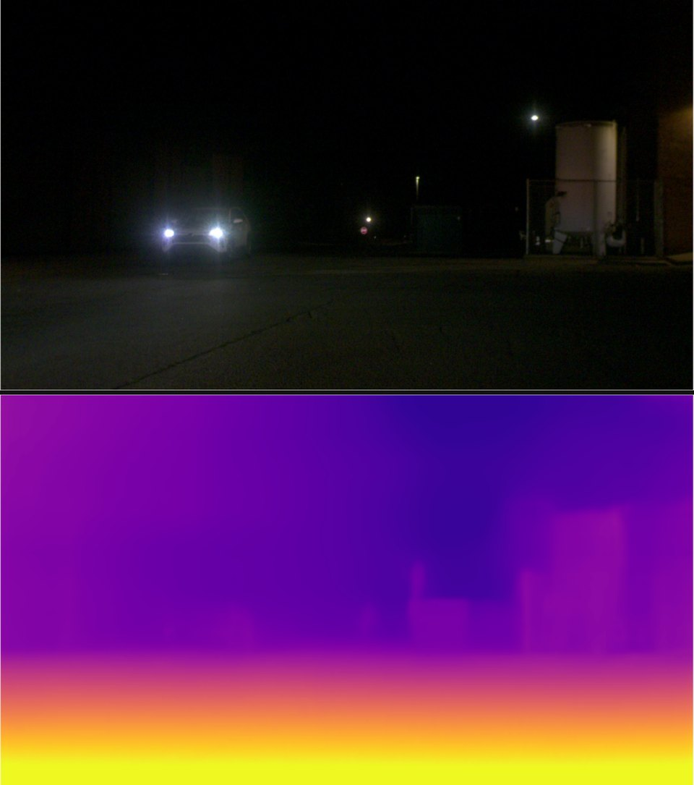
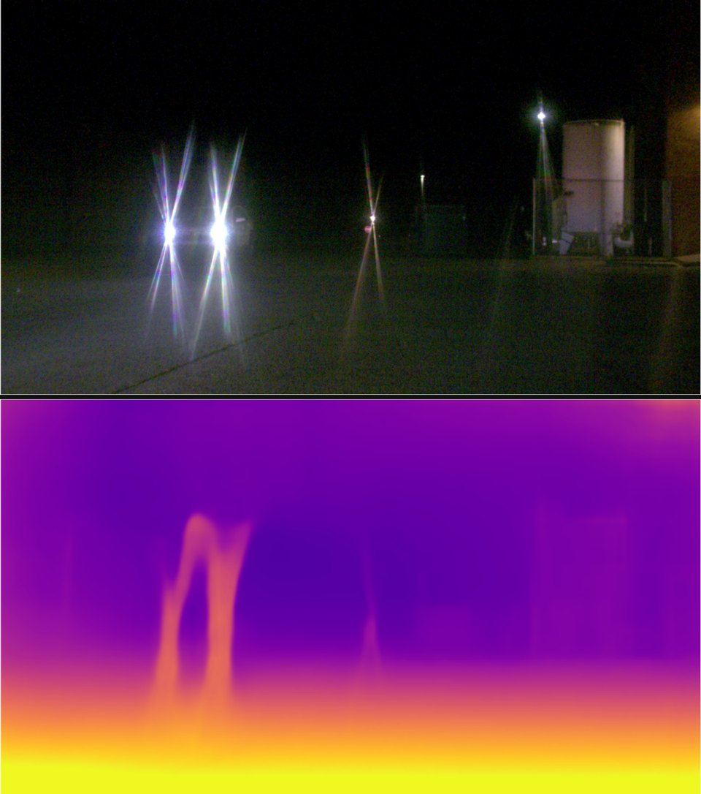
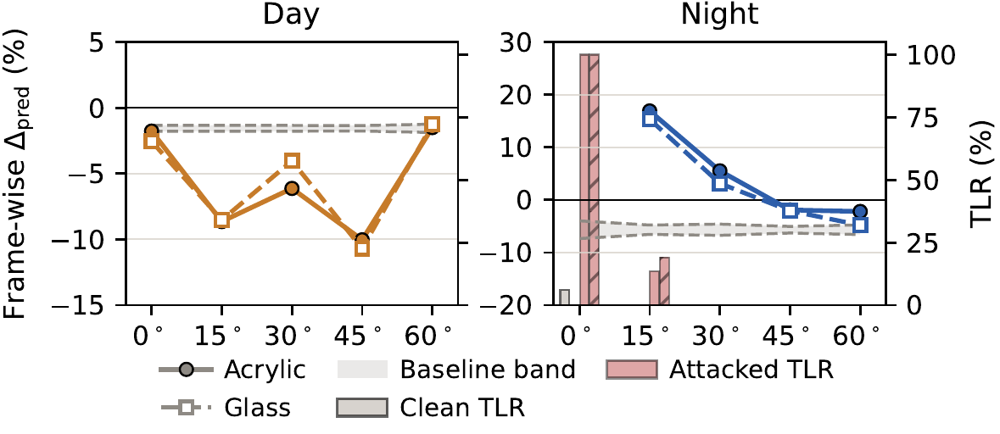

A few small scratches on a camera's lens cover can make a car's depth perception misjudge how far away another car is, by up to a third. The scratch does nothing on its own. It switches on only when a headlight or a glint of sunlight shines through it.
See it on a real camera
We mounted two identical cameras on top of each other, one behind a clean cover and one behind a scratched cover, and filmed a car. Drag the slider to compare what each camera sees (top) and the depth that the md4all model predicts from it (bottom; brighter means closer).


Real captures from our physical experiment, same moment, same scene. The only difference between the two cameras is the scratched cover. The streaks around the headlights and the reflection on the car body come from the scratches, and the depth map around the car changes with them.
The attack in four steps
-
1
Design
Offline, the attacker computes where to put a couple of straight scratches so their streaks will mislead the depth model.
-
2
Scratch
During a brief moment of unattended access, such as parking or servicing, the attacker scratches the lens or its protective cover.
-
3
Walk away
The scratch stays in place. The attacker never touches the car, its software, or the model again.
-
4
The scene pulls the trigger
When headlights or sunlight glints on another car hit the scratch, a streak appears right next to that car and shifts its predicted distance.

Why it matters
A new kind of physical attack
Most physical attacks on cameras change what the camera sees: a sticker on a stop sign, a projector, a laser. The attacker usually has to be there, or the trick sits in plain view. SLASH changes the camera itself, needs nobody present once the scratch is in place, and stays quiet until the scene supplies the light.
A scratch also has a built-in excuse. Lenses get scratched all the time, and a streak around a bright light looks like flare from a worn lens, not like an attack.
| Attack | On the camera | No attacker needed later | Fires only when triggered | Lasts |
|---|---|---|---|---|
| Scene patch / poster | ✗ | ✓ | ✗ | ✓ |
| Laser / projector | ✗ | ✗ | ✓ | ✗ |
| Adversarial lens flare | ✗ | ✗ | ✓ | ✗ |
| Camera sticker | ✓ | ✓ | ✗ | ✓ |
| SLASH (ours) | ✓ | ✓ | ✓ | ✓ |
Why a streak fools a depth model
Guessing distance from a single photo is an ill-posed problem, so depth models lean on visual cues: edges, highlights, shading, and where an object meets the road. A bright streak lands exactly on those cues, right next to the car whose light created it. The model has no way to know the streak came from the lens rather than the scene, so it treats the streak as real evidence about the car's shape and distance.
How SLASH works
The attacker cannot paint pixels; they can only choose where to scratch. SLASH therefore designs the attack in terms of the physical scratch and lets optics decide what the image looks like.

-
Optics decides where the streak goes
Each straight scratch is described by just two numbers: its angle and its position. A simple lens model then predicts the streak's position, direction, and length in the image for any light source in the scene.
-
A lightweight renderer draws it
Instead of an expensive physics simulation, SLASH paints a soft, light-like streak that brightens the image the way real scattered light does. That is all the depth model needs to be fooled.
-
One scratch for the whole drive
A scratch cannot be changed after it is made, so SLASH searches for a single scratch pattern that works across every frame of a scene as the car moves. The search only needs the model's outputs, not its gradients.
Results
We attacked three monocular depth estimators (MonoDepth2, md4all, DCPI-Depth) and three monocular 3D detectors (FCOS3D, PGD, OVM3D) on nuScenes driving scenes, then tested engraved acrylic and glass covers on real cameras. The attacker picks a direction: make the target car look closer or farther.
On driving data
The same scratch pattern shifts the car's predicted depth across a whole sequence of frames, in daytime and at night. Random scratches move the prediction much less, so the effect comes from the optimized placement, not from scratches in general. 3D detectors are harder to push (up to about 9% shift), but the attack still moves their distance estimates in the chosen direction.

On real cameras
We engraved the patterns optimized on nuScenes onto acrylic and glass covers, without re-tuning them for our test site, and filmed a real SUV with a clean and a scratched camera side by side. At night, the scratched camera's distance estimate shifted by about 17%, far beyond the model's normal frame-to-frame jitter. With the headlights pointing straight into the camera, the scratched camera lost the car entirely in every frame, while the clean camera lost it in only 6% of frames.



Can it be defended?
We tested three kinds of defense. None of them removes the threat.
Flare removal
Reduces the depth shift, but also wipes out legitimate bright details in the scene.
Image enhancement
Generic enhancement that a driving system might already use leaves the attack in place and can even make it stronger.
Adversarial training
A hardened model is bypassed by simply re-optimizing the scratch against it.
The lesson: a defense has to check the camera's optical path itself, not just the images or depth it produces.
FAQ
Is my car affected?
Our study targets research models (open monocular depth estimators and 3D detectors) on public driving data and on our own camera rig. We did not test any commercial vehicle. The point is that camera-based depth perception in general treats lens artifacts as real scene content, and nothing in today's pipelines checks for that.
Wouldn't someone notice the scratch?
The scratches are small and hard to see without a close look at the right angle. When they do produce a streak, it looks like flare from an ordinary worn or dirty lens. Someone who notices it would most likely blame wear rather than suspect an attack.
What does the attacker need?
A short window of unattended access to the camera, comparable to parking or a service visit, and something to scratch with. To design the pattern, they need rough camera specifications (focal length, aperture, sensor size) and a similar model to test against offline. They never touch the vehicle's electronics, software, or model.
Does it need a bright light?
Yes, and that is a feature: the scratch stays dormant until the scene provides a compact bright source. Headlights at night are the strongest trigger. In daytime, sunlight reflecting off the target car's body also works.
Does one scratch work on any car, anywhere?
Not anywhere. A scratch pattern works best for targets at a similar distance and angle to the ones it was optimized for. Within that range it carries over to new roads and new cars, keeping up to about 90% of its effect.
Why depth, and not just object detection?
Decisions such as braking depend on how far away other cars are. At night, the attack keeps the target car detected but places it at the wrong distance, so later modules receive an input that looks valid and is wrong.
Abstract
Physical adversarial attacks on vision systems are typically studied via scene manipulation, such as adversarial patches or projections, where the adversary controls what the camera observes at capture time. A smaller body of work has examined camera-side manipulations, such as camera stickers and auxiliary optics, which introduce consistent artifacts in the captured image. However, these approaches treat the attack as an image-space perturbation produced by designed transmissive patterns, without explicitly modeling how physical imperfections interact with scene-dependent lighting and optics. In contrast, we identify a distinct and underexplored threat: passive lens-side damage that is persistent yet trigger-conditioned, producing scene-dependent optical artifacts that bias geometric inference.
We instantiate this threat through Scratch-induced Lens Adversarial Streak Hijacking (SLASH), a physical-world attack caused by small scratches on a camera lens or protective cover. These scratches interact with bright point-like light sources and specular reflections to generate structured optical artifacts that systematically distort depth cues. Crucially, the perturbation is fixed in the optical path but conditionally triggered by the scene, making it both persistent and selective. To capture this behavior, we formulate the attack in optical space rather than pixel space, modeling the scratch pattern as a trigger-conditioned optical channel, and using the same scratch pattern across diverse viewing conditions. We evaluate SLASH in both digital and real-world settings on monocular depth estimation and monocular 3D object detection. On the nuScenes dataset, SLASH causes monocular depth models to estimate target vehicles as up to 32% closer to the camera or 36% farther away, with consistent effects extending to monocular 3D object detection. Physical experiments with both acrylic and glass covers confirm that the attack produces substantial depth errors on real camera inputs. These findings reveal a new attack surface in which benign-looking hardware imperfections act as latent, scene-triggered adversarial mechanisms, challenging existing assumptions about physical robustness and highlighting the need to account for optical-path perturbations in secure vision system design.
BibTeX
@inproceedings{he2027slash,
title = {Scratched Lenses, Shifted Depth: Passive Camera-Side Optical Attacks},
author = {He, Qinlin and Zhuang, Zeming and Wu, Yongji and Zhang, Lan and Yuan, Xiaoyong},
booktitle = {Network and Distributed System Security (NDSS) Symposium},
year = {2027},
doi = {10.14722/ndss.2027.231849}
}